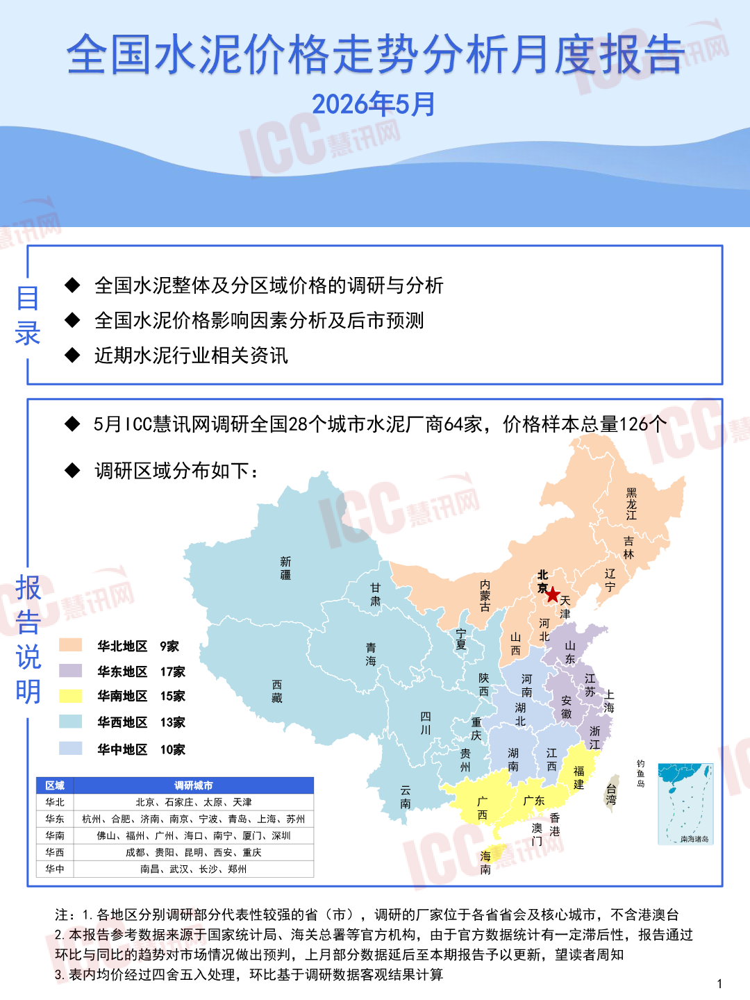
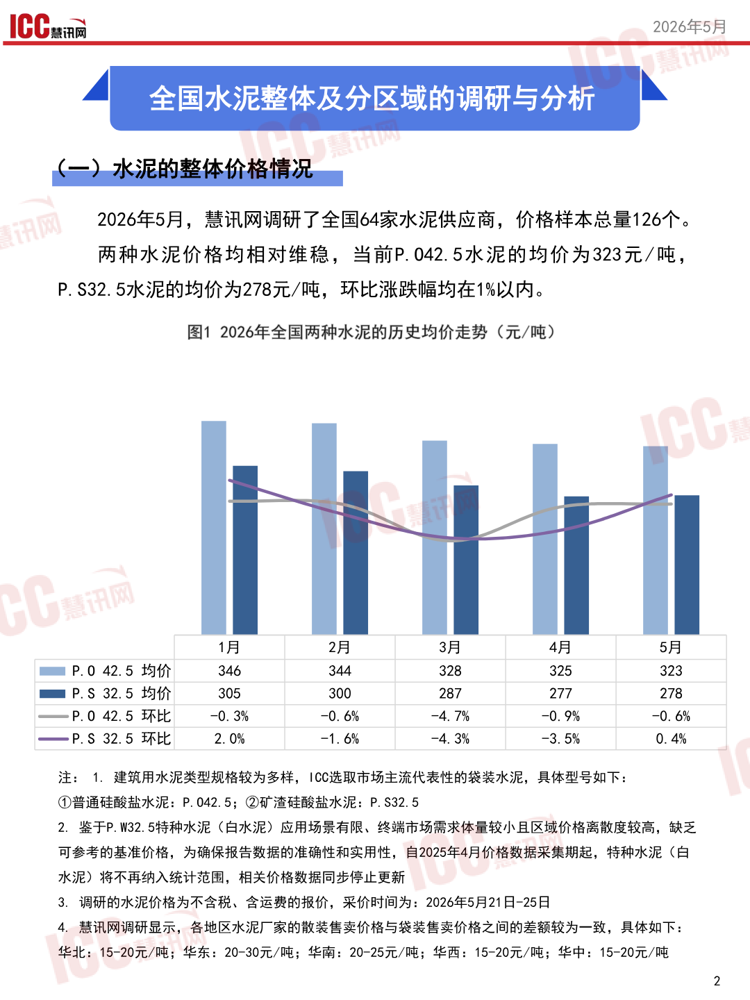
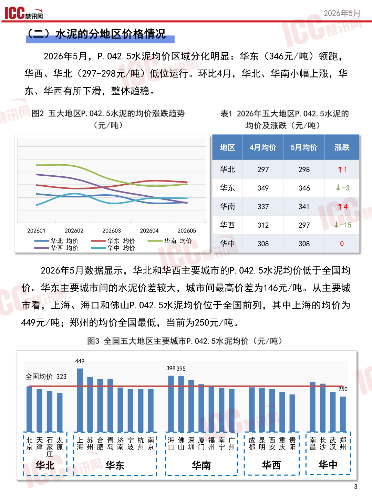
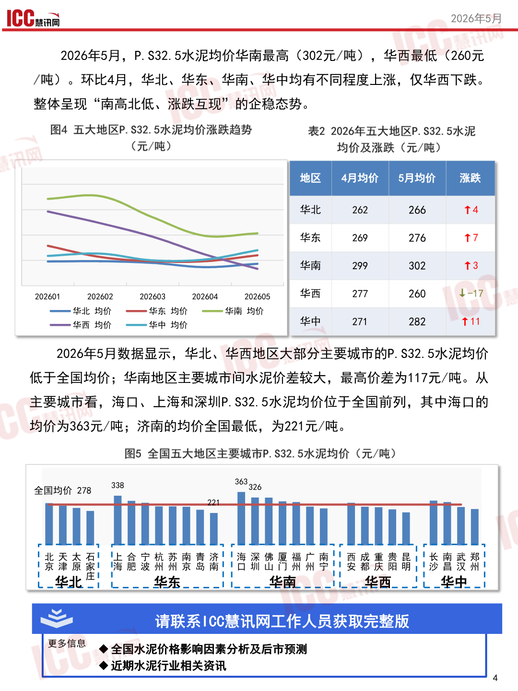

泥价格走势分析月度报
全国水泥价度报告
SS 2026年5月
目镶全国水泥整体及分区域价格的调研与分析
录全国水泥价格影响因素分析及后市预测
人近期水泥行业相关资讯
镶5月100慧讯网调研全国28个城市水泥厂商64家，价格样本总量126个 人调研区域分布如下: 有 加 新林 、、华北地区9家青政西血 说海东
华东地区“17家上后全
明华南地区15家藏西浊由区点
华西地区”13家前重北间村
华中地区”10家贵湖江本
州西鱼7 去3 华北北京石家庄、太原、天津南湾1 华东杭州、合肥、济南、南京、宁波、青岛、上海、苏州一香2 华南佛山、福州、广州、海口、南宁、厦门、深圳渔港 华中南昌、武汉、长沙、郑州南
注:1.各地区分别调研部分代表性较强的省〈市)，调研的厂家位于各省省会及核心城市，不含港澳台
2.本报告参考数据来源于国家统计局、海关总署等官方机构，由于官方数据统计有一定滞后性，报告通过
环比与同比的趋势对市场情况做出预判，上月部分数据延后至本期报告予以更新，望读者周知
3.表内均价经过四舍五入处理，环比基于调研数据客观结果计算1
查看原版第1页

10Caa2026年5月 全国水泥整体及分区域的调研与分析。加 2026年5月，慧讯网调研了全国64家水泥供应商，价格样本总量126个。 两种水泥价格均相对维稳，当前P.042.5水泥的均价为323元/吨， P.S32.5水泥的均价为278元/吨，环比涨跌幅均在1%以内。
图12026年全国两种水泥的历史均价走势〈元/吨)
| 1 月 | 2 月 | 3 月 | 4 月 | 5 月 | ||
|---|---|---|---|---|---|---|
| PE P.0 42.5 | 均 价 | 346 | 344 | 328 | 325 | 323 |
| EE P.S 32.5 | 均 价 | 305 | 300 | 287 | 277 | 278 |
| 一 pP.0 42.5 | 环比 | 一 0. 3% | 一 0. 6% | 一 4. 7% | 一 0. 9% | 一 0. 6% |
| -一 PS 32.5 | 环比 | 2. 0% | 一 1. 6% | 一 4. 3% | 一 3. 5% | 0. 4% |
注:1，建筑用水泥类型规格较为多样，10C选取市场主流代表性的袋装水泥，具体型号如下，
中普通硅酸盐水泥，P.042.5;@矿渣硅酸盐水泥:P.S32.5 2，鉴于P.W32.5特种水泥〈白水泥)应用场景有限、终端市场需求体量较小且区域价格离散度较高，缺乏 可参考的基准价格，为确保报告数据的准确性和实用性，自2025年4月价格数据采集期起，特种水泥〈白 水泥)将不再纳入统计范围，相关价格数据同步停止更新 3，调研的水泥价格为不含税、含运费的报价，采价时间为:2026年5月21日-25日 4，慧讯网调研显示，各地区水泥厂家的散装售卖价格与袋装售卖价格之间的差额较为一致，具体如下， 华北:15-20元/吨;华东:20-30元/吨;华南:20-25元/吨;华西:15-20元/吨;华中:15-20元/吨
查看原版第2页

2026年5月，P.042.5水泥均价区域分化明显:华东〈346元/吨)领跑， 华西、华北〈297-298元/吨)低位运行。环比4月，华北、华南小幅上涨，华
图2五大地区P.042.5水泥的均价涨跌趋势表12026年五大地区P.042.5水泥的
(元/吨)均价及涨跌〈元/吨)
| = | 一 | 华东 | 349 | 346 | 业 -3 | |||
|---|---|---|---|---|---|---|---|---|
| 华北 | 297 | 298 | T1 | |||||
| 华南 | 337 | 341 | T4 | |||||
| 202601 | 202602 | 202603 | 202604 | 202605 | 华西 | 312 | 297 | 士 -15 |
2026年5月数据显示，华北和华西主要城市的P.042.5水泥均价低于全国均 价。华东主要城市间的水泥价差较大，城市间最高价差为146元/吨。从主要城 市看，上海、海口和佛山P.042.5水泥均价位于全国前列，其中上海的均价为 449元/吨;郑州的均价全国最低，当前为250元/吨。
图3全国五大地区主要城市P.042.5水泥均价〈元/吨)
全398395 [DT
全国均价323
查看原版第3页

2026年5月，P.S32.5水泥均价华南最高《302元/吨)，华西最低《〈260元 /了吨)。环比4月，华北、华东、华南、华中均有不同程度上涨，仅华西下跌。 整体呈现“南高北低、涨跌互现”的企稳态势。
图4五大地区P.S32.5水泥均价涨跌趋势表22026年五大地区P.S32.5水泥
(元/吨)均价及涨跌〈元/吨)
| 一 | 一 | 华北 | 262 | 266 | T4 | |||
|---|---|---|---|---|---|---|---|---|
| 村 | 华东 | 269 | 276 | T7 | ||||
| 华南 | 299 | 302 | T3 | |||||
| 202601 | 202602 | 202603 | 202604 | 202605 | 华西 | 277 | 260 | 41-17 |
一全华北均价”一一华东均价”一一华南均价
2026年5月数据显示，华北、华西地区大部分主要城市的P.S32.5水泥均价 低于全国均价;华南地区主要城市间水泥价差较大，最高价差为117元/吨。从 主要城市看，海口、上海和深圳P.S32.5水泥均价位于全国前列，其中海口的 均价为363元/吨;济南的均价全国最低，为221元/吨。
图5全国五大地区主要城市P.S32.5水泥均价〈元/吨)
全国均价278。338|
T山1咱吕有|册外
L_华北-<，L-华东华南--华西-JU华中_， ss、:己
sa请联系1CC慧讯网工作人员获取完整版
更多信息全国水泥价格影响因素分析及后市预测
近期水泥行业相关资讯
查看原版第4页

AN本 专注让我们更专业!
看讯网在瑞达恒各分公司的联系方式
Www.rccgroup.cn”www.iccchina.com
查看原版第5页
瑞达恒 5EEESULA一DERTc
ZEsSSSS1人研立院
EN板块上线了
2SN二央线
PASSSSSNNNA专注让我们更专业
ETASSSNS和.AE人0区 SSSSN
@聚焦于工程领域的行业研究报告
@@对行业实时趋势和国家产业政策的研究与解读
@@为工程行业客户提供专业的第三方视角和精准的市场分析 专注让我们更雪上，
5全研究取信于工程多9行业基究报告行业区时姑的和Ch1人
全于[AAS|量久册
和为工理行业客户提供专业第三方视角和六1隐
四行业报告。团委研究
2国
查看原版第6页